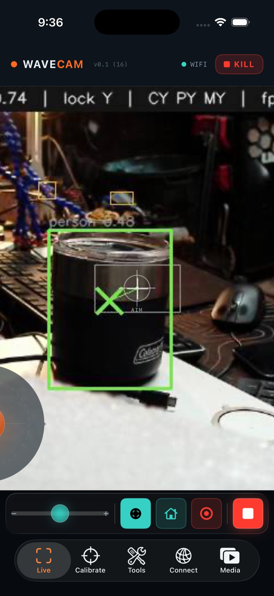
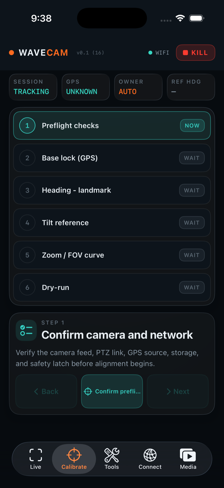
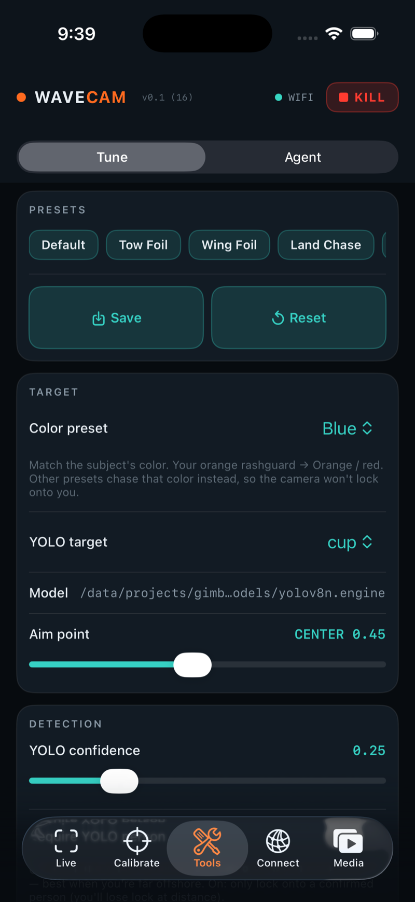
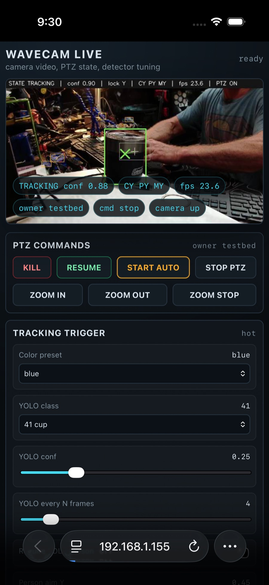
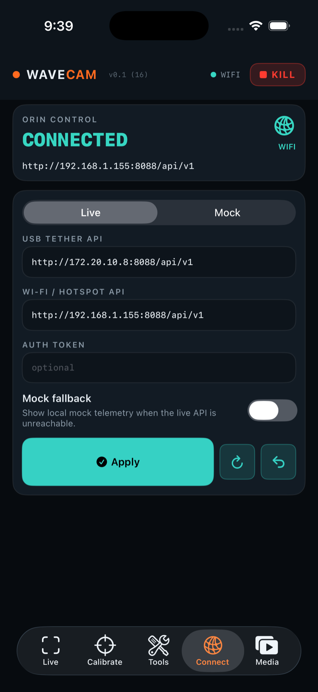
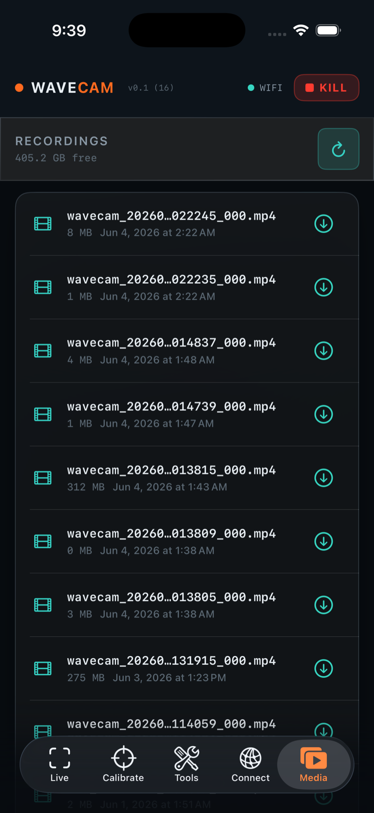

One subject, one camera, one safe path
WaveCam finds you two ways at once and fuses them: a neural net (YOLOv8n) spots a person, and a color detector spots your orange rashguard. When both agree, it locks and the camera follows. Everything routes through the Orin so there is exactly one authority for movement and safety.
Color + person fusion
Your orange rashguard is the standout cue on a blue ocean. YOLO confirms it's a person, not a buoy. Agreement within a pixel distance = a confirmed target.
Lock with hysteresis
Confidence above the lock threshold acquires; it only releases below the lower unlock threshold, so spray and quick turns don't drop you.
Smooth servo + zoom
A deadband-and-feed-forward controller pans/tilts without twitching. Optional Cinematic Zoom holds your on-screen size. The camera caps its own speed.
Reading this guide from the app
Tap the Guide button on any tab and it opens straight to that tab's section here. You can also browse the whole thing top to bottom — the nav bar up top jumps between sections.
Fly it, or let it fly itself
The Live tab is the camera feed plus everything you touch in the water: the joystick, zoom, record, and the two controls that matter most — AUTO and KILL.

Joystick & Home
Drag the translucent joystick (bottom-left) to pan/tilt manually. Tap the center to recenter; long-press the center to send the camera Home (pan-forward, wide).
Zoom & Fullscreen
The vertical slider zooms in/out. Tap the expand icon (top-right of the feed) for fullscreen; tap again to exit. Works in portrait and landscape — the phone tripod-mounts either way.
Record
The red record button starts/stops an MP4 on the Orin. Find clips later in Media.
Lock HUD
The reticle and lock readout show what the tracker sees: searching, locked, or holding. Turn on Show mask in Tune to see the color detection overlaid.
AUTO Hand it the wheel
Tap AUTO to request autonomous tracking. The camera takes over and follows your lock. Touching the joystick hands control back to you; tap AUTO again to resume. AUTO refuses while killed — Resume first.
KILL Always reachable
KILL is a hard latch: it stops all motion immediately and blocks any further movement until you Resume. The live feed keeps streaming so you can still see. This button is on screen at all times by design.
Teach it where it's pointing
Calibration solves the camera-to-world geometry so coarse GPS pointing (coming) and zoom framing land on target. Run it once per setup spot, and again if you move the tripod or the horizon shifts.
- Preflight — confirm feed, camera link, and that KILL is reachable before anything moves.
- Base lock — fix the tripod and set the camera's resting "forward" reference.
- Heading — align pan-home to a known bearing; this is WaveCam's compass without a magnetometer (motors near magnets make those useless).
- Tilt — set the horizon / water-level reference so vertical aim is true.
- Zoom FOV — map zoom positions to field-of-view so framing math knows how tight each zoom is.
- Dry-run — a no-stakes follow to confirm the solve before you paddle out.

When to recalibrate
Moved the tripod, changed beach/orientation, or framing feels biased off-center at distance? Re-run Heading + Tilt at minimum.
Every knob, what it does, when to touch it
Tune is under Tools → Tune. Most controls are Hot — they apply live with no restart. A few are Restart and prompt you to restart the service. Save a set as a Preset for tow-foil, wing-foil, land-chase, sunny, or cloudy days. The screenshot below is a testbed config (tracking a blue cup); in the field you'll run orange + person.


A Tracking Trigger what gets detected & locked
blue).person in the field (testbed: 41 cup).What "confidence" means here
Lock and unlock compare a fused score, not raw YOLO: a confirmed color + person target scores ~0.5–1.0, a color-only blob (or a lock sustaining near your last position) scores ~0.45, and a person with no color match scores ~0.2. So a lock of 0.60 means "only commit to a confirmed orange-on-person target," and unlock must stay below lock so a brief dropout doesn't drop you.
B PTZ Tuning how fast & smooth it moves
C Cinematic Zoom default off · all keys hot
Cinematic Zoom is a bounded zoom policy, not a second tracker. It only runs when PTZ is enabled, AUTO (autonomous) owns the camera, and there's a lock on a person box — then it zooms to hold your on-screen size and holds inside a deadband. With no lock it sends a zoom stop (it doesn't keep an old zoom move). A manual zoom nudge briefly suppresses it while pan/tilt keeps tracking. Enable it only after pan/tilt tracking looks good.
Presets & restart-required keys
Save the current set as a named Preset (e.g. Tow Foil, Wing Foil, Land Chase, Sunny, Cloudy) and re-apply it in one tap. Most keys are Hot and apply instantly; a handful (camera source/codec, PTZ address, detector model) are Restart and the app will prompt you to restart the service for them to take effect.
It watches. It never drives.
The Agent panel surfaces service health and logs, and can accept a diagnostics request. It is supervise-only by design — it will never move the camera, run a shell, or restart a service on its own.
Service health
Green/red rows for the vision, PTZ, and API services so you can spot a stalled component at a glance.
Logs
A minimal, redacted log view — recent backend lines for field debugging, with secrets stripped.
Supervise-only
A summon request returns "accepted — no automatic shell, service, or camera-movement command was run." Advisory only.
Two ways in, picked automatically
The app reaches the Orin over a USB tether (fastest) or Wi-Fi/hotspot, and labels which one is live. You rarely touch this once it's set.
USB tether
Default http://172.20.10.8:8088. Used when the phone is plugged into the Orin's USB-A host port. Tried first.
Wi-Fi / hotspot
Default http://192.168.1.155:8088. Used when the Orin is on Wi-Fi. The app keeps probing tether so re-plugging restores USB automatically.
Token & Mock
Optional auth token, and a Mock mode that renders the UI without a backend — handy for demos and for reading this guide offline.

Your clips, off the Orin
Recordings you start from Live land on the Orin. The Media tab lists them so you can play, download to your phone, and share.

Browse & play
Each recording shows its name and size. Tap to preview.
Download & share
Pull a clip to the phone, then share it through the standard iOS share sheet.
Storage
Clips live on the Orin until you remove them. Pull the keepers before you wipe a card.
The hardware stack
| Part | What it is | How it connects |
|---|---|---|
| Compute | Jetson Orin Nano — runs vision (YOLOv8n TensorRT + color), fusion, servo, the API. | Orin's camera-LAN interface 192.168.100.10; serves the app on :8088. |
| Camera | Prisual NDI PTZ — the pan/tilt/zoom actuator and video source. | Orin-only control via VISCA over UDP 192.168.100.88:1259; video over RTSP. |
| GPS Planned | SeeedStudio Wio Tracker L1 Lite (LoRa / Meshtastic) — coarse point & zoom at long range; vision refines in-frame. | Not yet live; the stub returns empty. Heading comes from pan-home, no magnetometer. |
| Console | The iOS WaveCam app — your operator screen. | USB tether 172.20.10.8 or Wi-Fi 192.168.1.155, port :8088. |
Stop is not Kill. Restart is not Resume.
Movement controls are deliberately separate from safety controls. Read the state before repeating a command.
KILL
Global latch. Stops all motion now and blocks future motion until Resume. Feed stays live. Always on screen.
Stop PTZ
Manual hold — halts pan/tilt/zoom but does not latch. Backend stays reachable; you can move again or re-arm AUTO.
Start Auto
Requests autonomous ownership. Refuses while killed — Resume first. No auto-steal: take manual, then AUTO.
Service
Stops PTZ, then restarts the WaveCam service — used after a Restart-required config change.
The one rule
The automation supervises; it never moves the camera on its own. You — and the KILL button — are always the final authority.
When it misbehaves
| Symptom | Likely cause | Try this |
|---|---|---|
| Won't lock onto you | Conf too high, wrong color preset, or Require-person on at distance | Turn on Show mask; lower YOLO conf; verify Color preset; turn Require-person off far out; lower Lock threshold. |
| Camera jitters / twitches | Deadband too small or feed-forward too hot | Raise Deadband; lower Feed-forward gain; raise Min speed if slow moves stutter. |
| Loses you in spray / turns | Unlock too high, match distance too tight | Lower Unlock threshold; raise Color/YOLO match px. |
| Grabs the wrong orange thing | Color-only false cue | Turn Require-person on; raise Min color area; lower Max color area. |
| Zoom stuck / too tight | Cinematic Zoom state, or the camera held a zoom | Long-press joystick center for Home (wide); check Subject size; disable Cinematic Zoom and retest pan/tilt. |
| Can't connect | Wrong route or Orin not up | Check the route label in Connect; re-plug USB; confirm the Wi-Fi static IP; the app falls back automatically. |
| Camera won't move | Killed latch is set | Tap Resume, then AUTO. KILL stays latched on purpose until you clear it. |